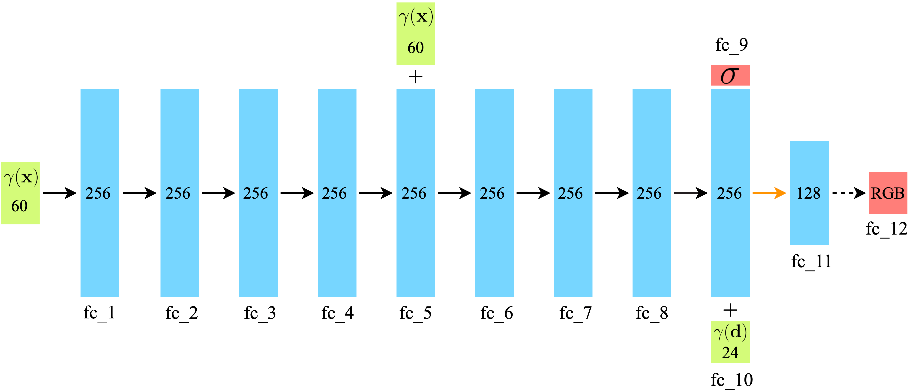

NeRF Background
Exploiting Activation Sparsity
Accelerating Volumetric Rendering
Quantization
🏎💨 Accelerating NeRFs: Optimizing Neural Radiance Fields with Specialized Hardware Architectures
William Shen*1, Willie McClinton*1
1MIT CSAIL
* Denotes equal contribution.
Abstract
Neural Radiance Fields (NeRFs) have recently seen an explosion in interest, with significant interest not only from computer vision and graphics researchers but also cinematographers, visual effects artists, and roboticists.
Substantial efforts have been made to improve training and inference speeds, including algorithmic improvements such as multiresolution hash tables (Instant NGP) and voxel grids (DVGO), as well as architectural improvements such as using thousands of tiny MLPs (KiloNeRF) or extracting traditional 3D representations such as polygons from a NeRF (MobileNeRF).
Despite this remarkable progress, limited attention has been paid to optimizing the dataflow and investigating the hardware acceleration potential of NeRFs, particularly during inference. The motivation of our project is to explore this untapped potential and decrease the computational requirements of NeRF models. We aim to answer the following key questions:
- Which components of the NeRF pipeline (e.g. positional encoding, ray sampling, MLP, volumetric rendering) are bottlenecks that are amenable to optimization and acceleration?
- Can we design hardware acceleration architectures to overcome these bottlenecks and better exploit NeRF dataflows?
- How does this affect the performance of NeRF for metrics such as rendering quality, computational resources, and energy usage?
Table of Contents
NeRF Background

Videos rendered from our NeRF implementation using 32-bit floating point precision.
Chair
Drums
Ficus
Hotdog
Lego
Materials
Mic
Ship
Exploiting Activation Sparsity
Our NeRF model consists of 12 fully-connected (FC) layers, 10 of which use the ReLU activation function hence resulting in sparse activations. This results in a significant number of ineffectual computations, which spend unnecessary energy and computation time.
We propose to exploit this activation sparsity by using compressed representations of the activations, along with gating and skipping to avoid carrying out unnecesary computations. The figure below shows the average input activation sparsities of the FC layers of NeRFs trained on the synthetic datasets.
We find that the overall average sparsity is 60.3% across the FC layers, excluding fc_1 and fc_11. Note that fc_1 receives the position-encoded ray samples while fc_11 receives the output from fc_10 which does not have an activation function.


We use the Eyeriss architecture to accelerate the NeRF model. We gain a significant reduction in energy and cycles by exploiting the activation sparsity. The table below shows the results of our experiments.
Accelerating Volumetric Rendering
TODO: Willie
Quantization
Question: The NeRF models by default use 32-bit floating point numbers (FP32). Can we quantize the model to FP16 to speed up inference, and what tradeoffs do we make as a result?
Answer: Yes, we can quantize the model to fp16 and achieve significant speedups (>2x 🏎💨 improvement in rendering time) at the cost of decreased peak signal-to-noise ratio (PSNR). While the PSNR is decreased, it is difficult to observe any visible difference between the images rendered from the FP32 and FP16 models. Thus, FP16 could be sufficient for many applications and additionally comes at the benefit of 2x smaller model size.
Note: we run FP32 and FP16 using PyTorch on a NVIDIA RTX 3090 GPU to determine the render time. We estimate energy consumption by multiplying the render time by the average power consumption of the GPU.
Lego (FP32)
PSNR (avg) = 33.72 dB
🐌 Render Time = 160.85s
Model Size = 2.39 MB
Lego (FP16)
PSNR (avg) = 32.74 dB
🏎💨 Render Time = 60.74s
Model Size = 1.20 MB
Course project for 6.5930 Hardware Architecture for Deep Learning - Spring 2023